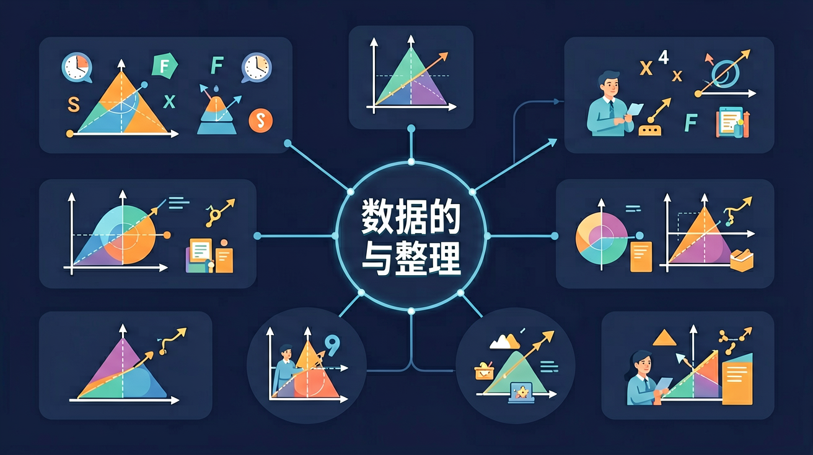

🎯 能说出三种常见的数据收集方法
🎯 能判断抽样调查中的样本是否具有代表性
🎯 能根据原始数据制作简单的频数分布表
❓ 为什么收集数据时不能只问好朋友的意见？
❓ 怎么知道我的调查问卷问题设计得好不好？
❓ 频数分布表看起来好复杂，有没有简单点的理解方法？
学完这一课，这些问题你都能自信地回答。
以下哪种数据收集方法最适合了解全校学生的平均睡眠时间？
制作频数分布表时，身高数据155-160cm属于？
📝 问题引入：七年级一班要调查同学们每天的睡眠时间，班长小明设计了一个问卷。他在问卷里写了"你睡多少小时？A.少于6小时 B.6-8小时 C.8小时以上"，这样的问卷有什么问题？数据收集有哪些讲究？
以下是一份调查"同学们每天户外运动时间"的问卷，请帮助完善它：
问题：你每天的户外运动时间是多少？
🎒 问题引入：全班40名同学参加了数学测试，老师拿到了40个分数。这些数字密密麻麻，很难看出规律。如果把分数分成若干区间，统计每个区间有多少人，就会清晰多了——这就是频数分布表和条形图的威力！
以下是40名同学的数学成绩（拖动滑块调整分组）：
你的班级要举办"最受欢迎课外活动"投票，请你设计一套完整的数据收集与整理方案：
点击为各活动投票，模拟班级数据收集过程：